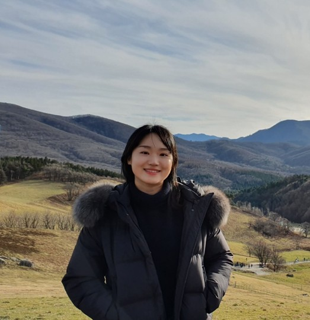
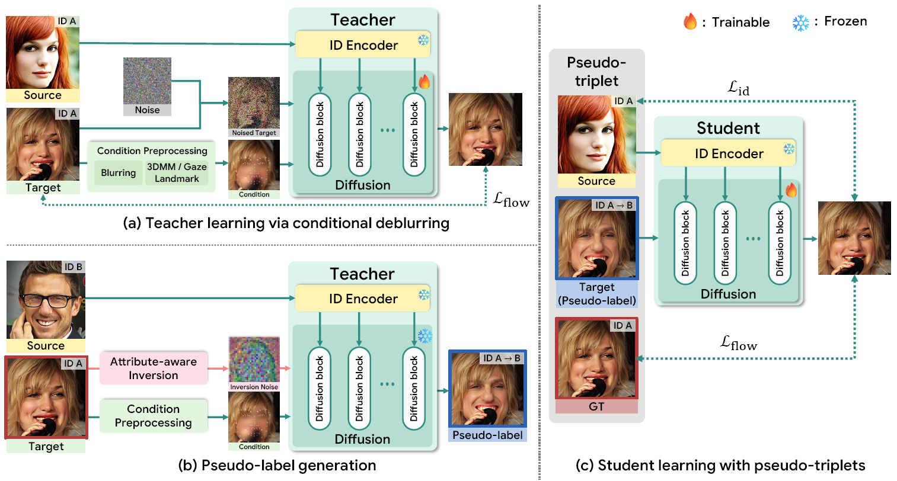
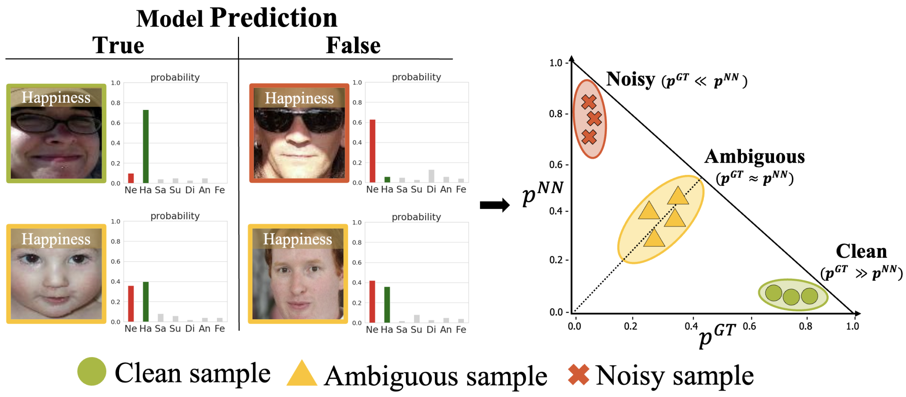
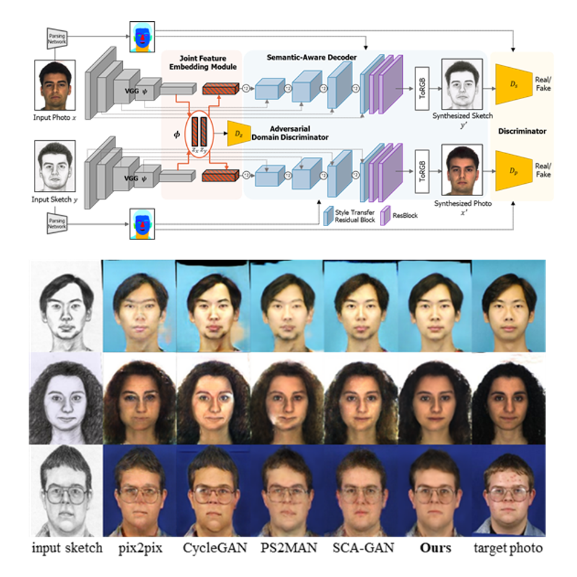
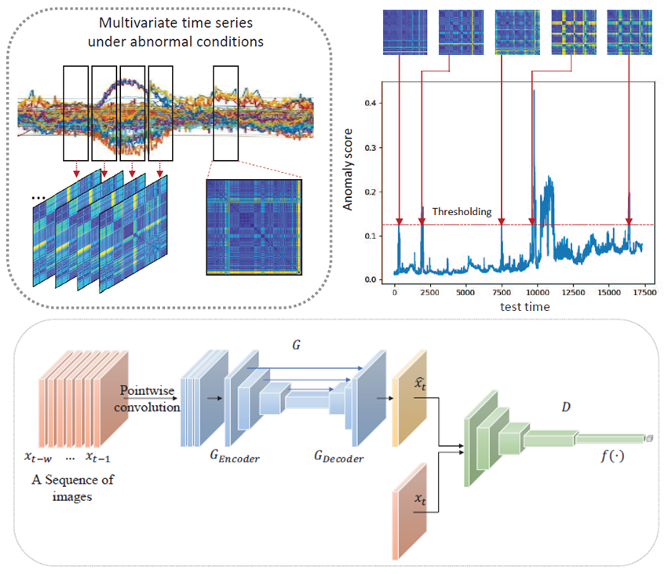
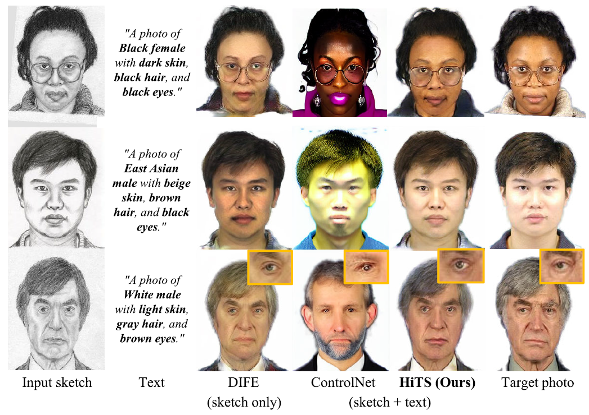
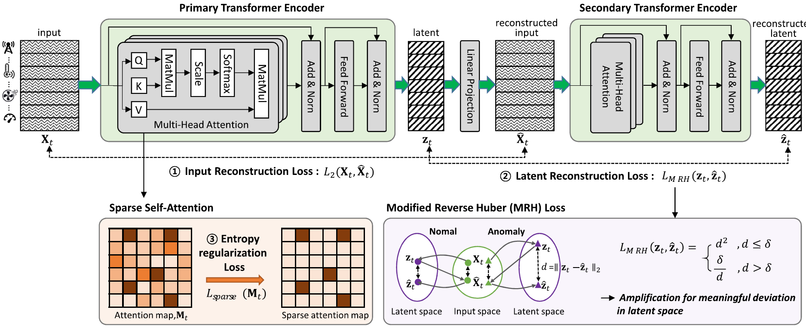
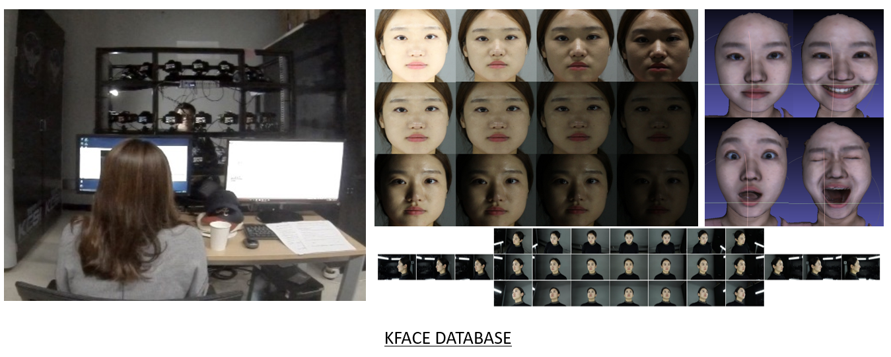
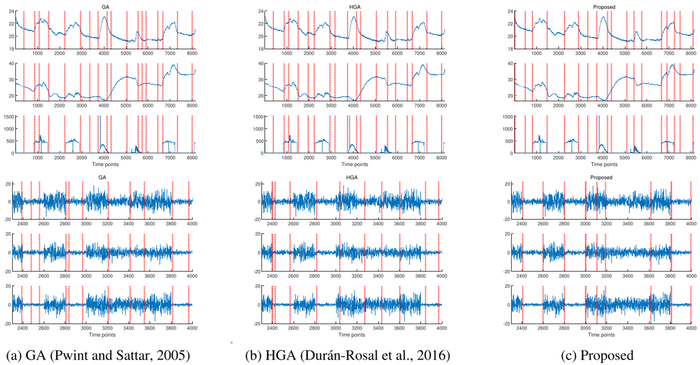

I am a Postdoctoral Researcher at KAIST AI with Prof. Seungryong Kim.
I received my Ph.D. in Electrical & Electronic Engineering from Yonsei University, supervised by Prof. Kwanghoon Sohn and Prof. Ig-Jae Kim (KIST), and my B.S. and M.S. in Mathematics from Ewha Womans University, supervised by Prof. Jungho Yoon.
My research spans computer vision, image generation, and representation learning. I am particularly interested in a wide range of face-related tasks, including facial expression recognition, style transfer, cross-modal recognition, face swapping, and multi-view face generation. I am also interested in designing loss functions that reflect the underlying distribution of the feature space.

A diffusion-based teacher-student framework that generates attribute-preserving pseudo-labels for face swapping, enabling high-fidelity identity transfer while preserving target attributes such as pose, expression, and lighting.

We address label ambiguity in facial expression recognition for in-the-wild scenarios, proposing a method that handles the inherent subjectivity and ambiguity in emotion labels.

A domain-invariant feature embedding approach for robust face photo-sketch synthesis that bridges the large domain gap between photo and sketch modalities.

A GAN-based approach for detecting and localizing anomalies in multivariate time series data collected from power plant systems.

A hierarchical text-guided stylization method for face sketch-to-photo synthesis, leveraging text prompts to control style at multiple levels of abstraction.

A dual transformer architecture with latent amplification for robust anomaly detection and localization in multivariate time series data.

A large-scale face database collected under diverse unconstrained environments, designed to support AI-based face recognition research.

A memetic algorithm combining evolutionary search and local optimization for efficient segmentation of multivariate time-series data.